Bachelor Thesis
Applying wavelet in Image and Video compression problems
Abstract
Rapid development of network technologies as well as the Internet in global makes demand for information transmission increased quickly. Image and video data is one of the information transferred mostly in order to serve more diverse needs of users: entertainment, movies, online TV, remote seminars, or simply applications that support webcam function ... Therefore, data compression is one of the essential steps in the storage and transmission of image and video data over the network due to limited resources, bandwidth. The compression techniques must be improved continuously to meet the increasing demands for quality as well as compression ratio (two conflicting elements).
In addition, image and video encoding must meet the requirements of transmission on heterogeneous environments of terminals such as workstations (PDA to PC), bandwidth (56 K to T3), screen size (cell phones to high-definition television), more different purposes (conversation, chat webcam support, etc.), errors in the noise environment, and ability to recover when not getting enough bit-stream (embedded coding).
To resolve this requirement should have a compression method with high flexibility, allowing image and video after compression be able to produce more quality, resolution and frame rate varies depending on bit rate, speed and bandwidth of the terminal.
Therefore, the objective of the thesis focused on the rate, quality compression capabilities along with scalability in image and video compression compared to JPEG and MPEG compression standard. The approach of the project is based on wavelet theory, wavelet transform applied to the problem of image compression, video and a number of algorithms used to quantize the wavelet coefficients as SPIHT, CSPIHT.
Results
Thesis has presented a number of concepts, processes and algorithms used in image and video compression and wavelet transform. In the process of image and video compression, CSPIHT improves SPIHT to allow embedded color for quantity scalability as input parameters. However, in video compression, thesis does not apply motion video compression, so the compression ratio is not optimal (compared to MPEG) as well as supporting integration audio into video, changing bitrate scalability on video transmission over the network.
Future works of thesis are (1) Studying HS-SPIHT algorithm (Highly Scalable Set Partitioning in Hierarchical Trees) to overcome the disadvantages of CSPIHT algorithm, (2) Taking part in the process motion compensated video compression to increase the compression ratio (3) Integrating audio compression to video compression (4) Supporting bit-rate to transmit video over the network.
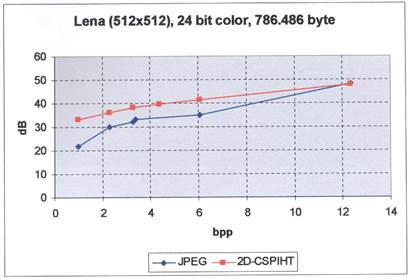
Comparing the results of 2D-CSPIHT and JPEG on Lena Image (24 bit colors, 512 x 512)
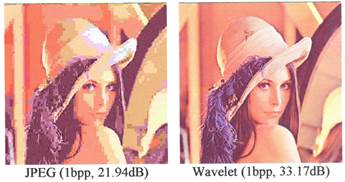
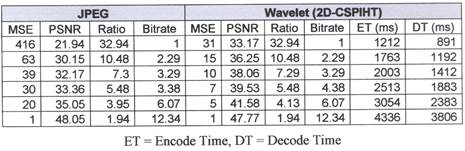
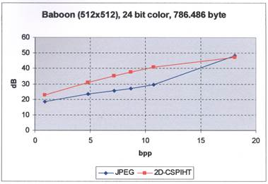
Comparing the results of 2D-CSPIHT and JPEG on Baboon Image (24 bit colors, 512 x 512)
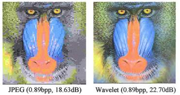
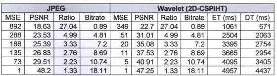
Image compression results: 2D-CSPIHT compression method gives better results than JPEG at the same bitrate.
Video compression:
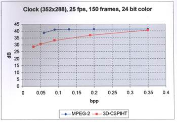
Comparing the results of 3D-CSPIHT and MPEG-2
on Clock video (24 bit color, 352 x 288, 150 frames)
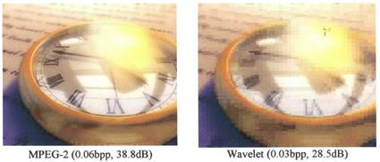
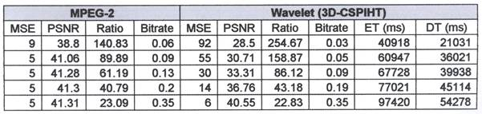
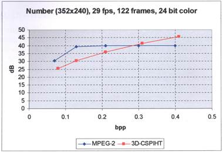
Comparing the results of 3D-CSPIHT and MPEG-2
on Number video (24 bit color, 352 x 240, 122 frames)
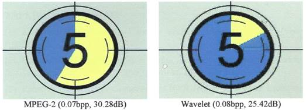
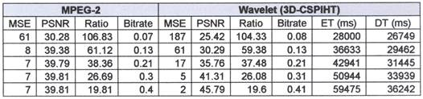
Video compression results: 3D-CSPIHT (not using motion compensation) with Haar filters gives lower quality than MPEG-2 at the low bitrate ratio.